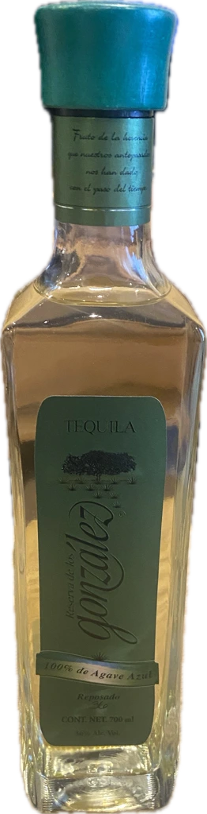
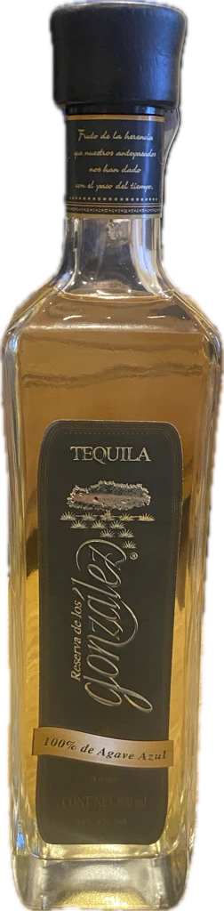

01 — CULTIVO
八年を土に委ねる
標高2,000メートル、ロス・アルトスの赤土。ヒマドール（アガベ収穫職人）は、糖度が頂点に達する八年目の瞬間だけを待ちます。早すぎても、遅すぎてもならない。畑仕事は、時間との静かな対話です。
お客様は20歳以上ですか？
このサイトはアルコール飲料を取り扱っています。
20歳未満の方はご覧いただけません。
申し訳ございません。20歳未満の方にはサイトをご案内できません。
AGAVE AZUL 100% — LOS ALTOS, JALISCO
時が磨く、アガベの光。
ハリスコ州ロス・アルトスの高地で八年をかけて育てたブルーアガベを、小さな蒸留所でゆっくりと蒸留し、オーク樽の静寂の中で熟成させる。ベラーダは、待つことを知る大人のためのアガベスピリッツです。


OUR STORY
標高2,000メートル、ロス・アルトスの赤土。ヒマドール（アガベ収穫職人）は、糖度が頂点に達する八年目の瞬間だけを待ちます。早すぎても、遅すぎてもならない。畑仕事は、時間との静かな対話です。
収穫したピニャは石窯で三日かけてゆっくりと蒸し上げ、小さな銅製ポットスチルで二度蒸留します。効率よりも輪郭を。一度に仕込むのは、わずか数百リットルです。
地下熟成庫に眠るオーク樽の中で、スピリッツは琥珀色の深みをまといます。十ヶ月、二年、五年、八年——熟成年数ごとに異なる表情は、そのまま時間の味わいです。
COLLECTION

MEMBERS ONLY
樽番号を刻んだ八年熟成のエクストラアネホ「グラン・レセルバ」は、年間三百本のみの限定生産。会員のお客様に、一般発売に先立ちご案内いたします。
ご登録には20歳以上であることの確認が必要です。